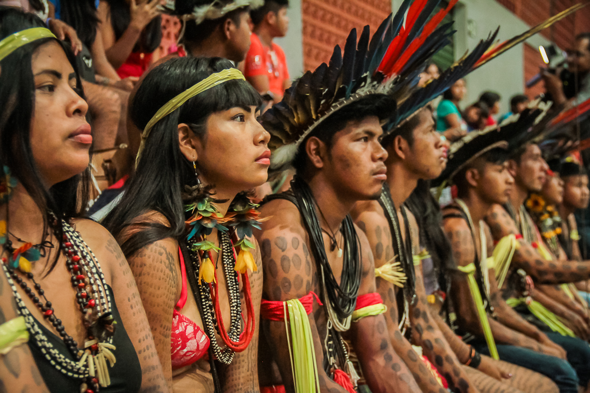

Atualmente, existe uma média de 300 povos indígenas no Brasil, sendo mais de 817 mil índios, de acordo com estudos realizados em 2010, pelo IBGE (Instituto Brasileiro de Geografia e Estatística). Embora o censo realizado pela Funai estima que esse número seja bem inferior, por considerar como índio apenas aqueles que vivem em reservas, com isso, a quantidade cai para aproximadamente 358 mil. Hoje, os principais centros de concentração de índios se localizam nas regiões do Amazonas, Nordeste, Centro-sul e no estado do Mato Grosso do Sul.
Desde a chegada dos estrangeiros as terras do continente Sul Americano, ou seja, os conquistadores, os nativos brasileiros vêm sofrendo massacres, escravidão, repressão e discriminação. Seus direitos pela terra que habitavam foi tomado a forças e armas. Invadiram sua casa, roubaram o que tinham, mataram. Ainda hoje os indígenas ainda são vítimas de preconceito e discriminação. Graças ao índio o Brasil tem toda essa diversidade, mas hoje são isolados e não tem reconhecimento pela sociedade.
Historicamente, a situação dos índios variou entre quadros de completo abandono, perseguição e miséria. Até meados da segunda metade do século XX, alguns especialistas no assunto acreditavam que a presença dos índios chegaria a um fim.
As principais causas do restrito número de índios no Brasil são basicamente a expropriação de suas terras para ceder à ocupação rural e urbana, grande quantidade de índios mortos em lutas contra brancos e, principalmente, por doenças que até então eram desconhecidas, já que esses não possuíam anticorpos contra doenças como gripe e sarampo, que foram contraídas através do contato com os brancos. Houve períodos que essas e outras promoveram epidemias avassaladoras.
“Os desafios enfrentados por muitos povos indígenas do Brasil são enormes. As origens desses desafios incluem desde a histórica discriminação profundamente enraizada de natureza estrutural, manifestada na atual negligência e negação dos direitos dos povos indígenas, até os desdobramentos mais recentes associados às mudanças no cenário político”, disse a relatora especial da ONU Victoria Tauli-Corpuz.
A especialista citou a violência como um dos principais problemas. De acordo com o Conselho Indigenista Missionário, 92 indígenas foram assassinados em 2007; em 2014, esse número havia aumentado para 138, tendo o Mato Grosso do Sul o maior número de mortes. Com frequência, os assassinatos constituem represálias em contextos de reocupação de terras ancestrais pelos povos indígenas depois de longos atrasos nos processos de demarcação.
A relatora também citou a paralisação dos processos de demarcação, os despejos e os profundos impactos de megaprojetos de infraestrutura localizados dentro ou perto de territórios indígenas e implementados sem consulta prévia aos afetados. Tauli-Corpuz visitou o país em março a convite do governo brasileiro.